故障代码及排除方法
使用专用工具及设备（见表5.2.1专用工具）进行排查。排查前做好高压防护，涉及高压回路的排查需整车高压下电。通过诊断仪读取整车控制器中存储的故障代码并记录，涉及电池总成的故障代码按下列相应的故障代码的排查流程进行故障排查，如下表所示：P1B4D 碰撞发生

P1B43 SRS碰撞信号故障（维修方式参见P1B4D）P1B41 绝缘故障/P1B53 绝缘故障警告 电池端绝缘故障/绝缘故障警告维修方案
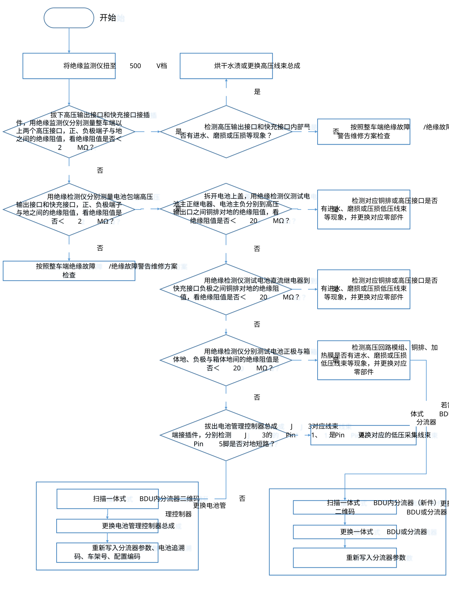
整车端绝缘故障/绝缘故障警告维修方案
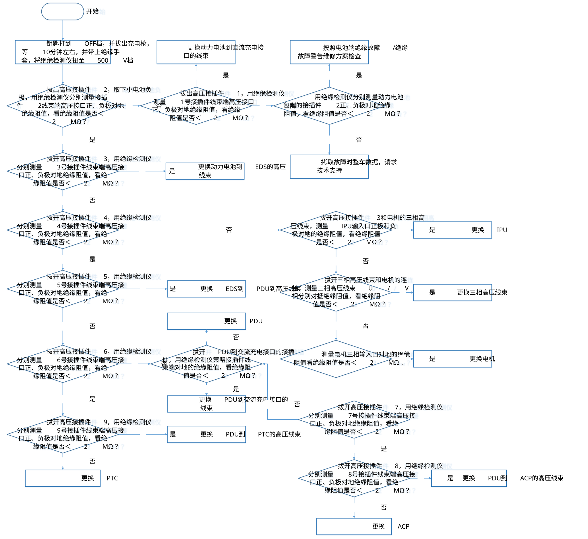
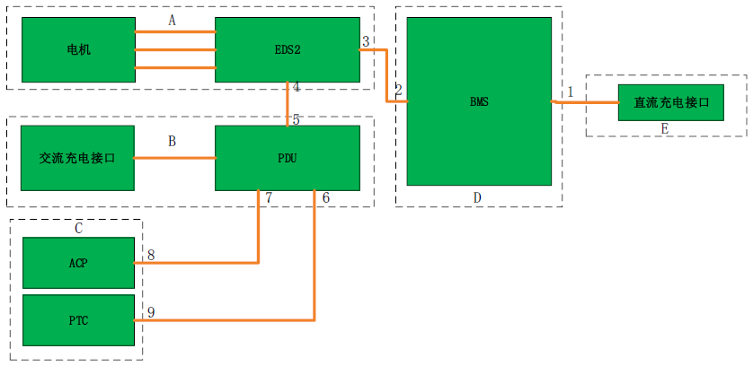
P1B4E 电池端高压互锁回路开路
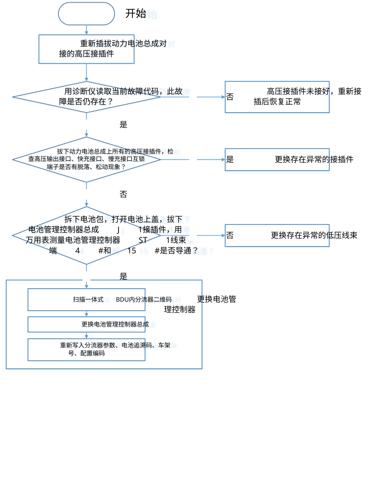
P1B4F 高压互锁回路对VCC短路

P1B50高压互锁回路对GND短路（维修方式参见P1B4F） P1B54自检失败
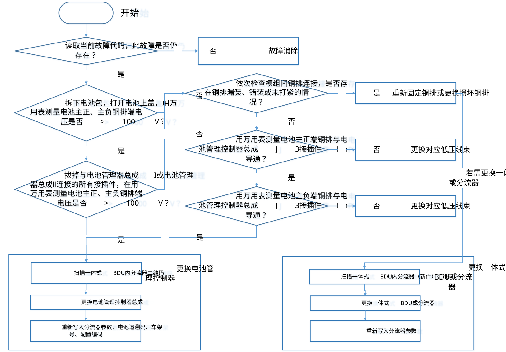
P1B55 高压回路短路
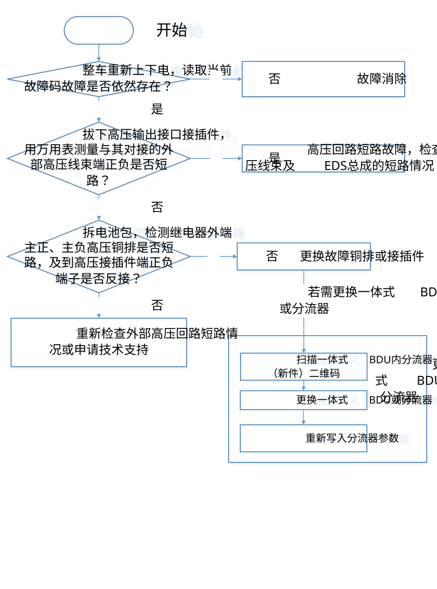
P1B56高压负载开路
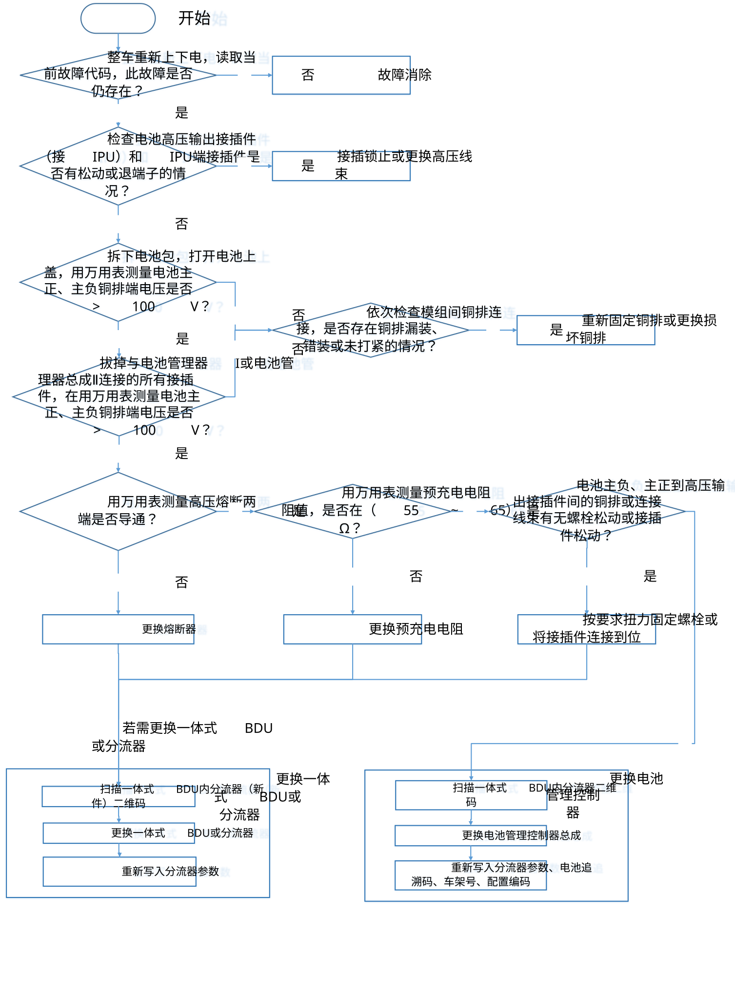
P1B60主正继电器低边驱动控制端开路故障
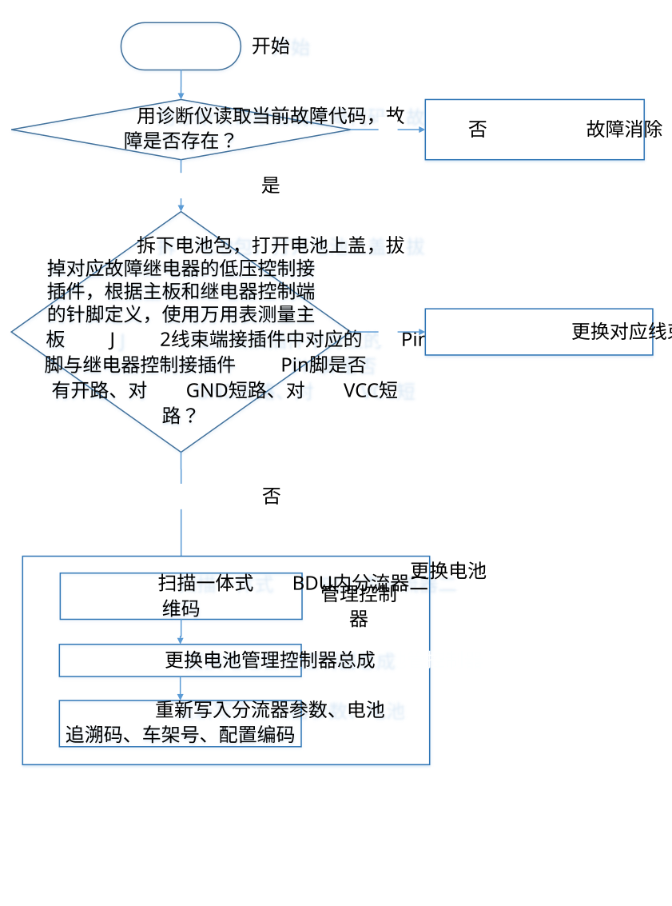
P1B61 主正继电器低边驱动控制端对VCC短路故障（维修检查方式参见P1B60）P1B62 主正继电器低边驱动控制端对GND短路故障（维修检查方式参见P1B60）P1B66 预充电继电器低边驱动控制端开路故障（维修检查方式参见P1B60）P1B67 预充电继电器低边驱动控制端对VCC短路故障（维修检查方式参见P1B60）P1B68 预充电继电器低边驱动控制端对GND短路故障（维修检查方式参见P1B60）P1B7C 直流充电继电器低边驱动控制端开路故障（维修检查方式参见P1B60）P1B7D 直流充电继电器低边驱动控制端对VCC短路故障（维修检查方式参见P1B60）P1B7F 直流充电继电器低边驱动控制端对GND短路故障（维修检查方式参见P1B60）P1B92 继电器高边驱动控制端1开路（维修检查方式参见P1B60）P1B93 继电器高边驱动控制端1对VCC短路（维修检查方式参见P1B60）P1B94 继电器高边驱动控制端1对GND短路（维修检查方式参见P1B60）P1B8B 直流充电继电器低边驱动控制端开路故障(负）（维修检查方式参见P1B60）P1B8C 直流充电继电器低边驱动控制端对VCC短路故障(负）（维修检查方式参见P1B60）P1B90 直流充电继电器低边驱动控制端对GND短路故障(负）（维修检查方式参见P1B60）
U1C80 BMS未接收到VCU的CAN交互信息

U1C8A IPU电压丢帧故障

U1C84 BMS未接收到OBC充电机的CAN交互信息
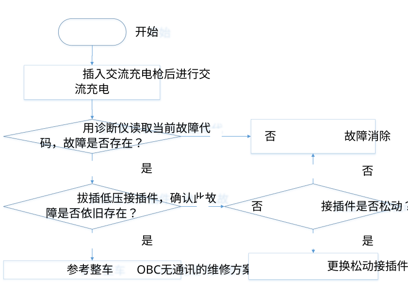
U1C86 BMS主板未接收到电流传感器的CAN交互信息

电流传感器接口定义如下：
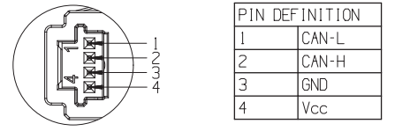
P1D01总电流采集合理性故障

P1B91 总电流传感器故障（维修检查方式参见P1D01）

P1D04单体电压采集合理性故障

P1B08 电池单体电压过高三级故障（维修检查方式参见P1D04）P1B25 电池单体电压过高四级故障（维修检查方式参见P1D04）P1B2D电池单体电压过高五级故障（维修检查方式参见P1D04） P1D03 温度采集合理性故障

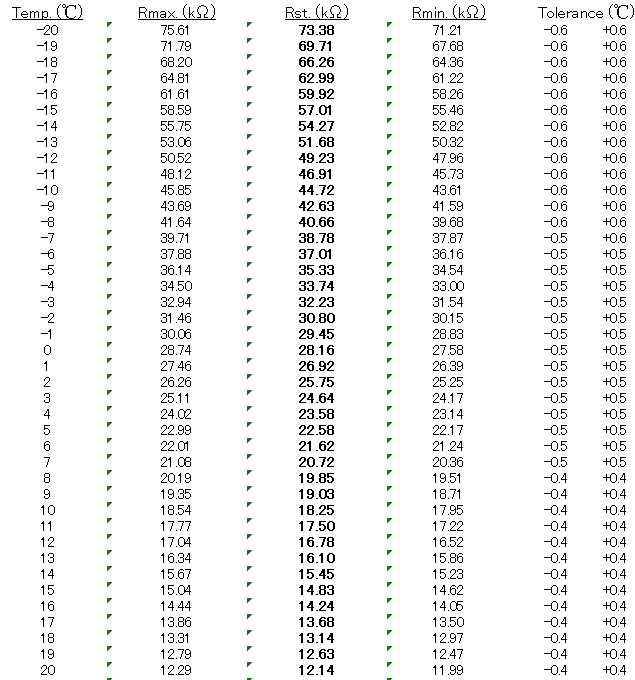
P1B2F 电池模组温度过高五级故障（维修检查方式参见P1D03）P1B29 电池模组温度过高四级故障（维修检查方式参见P1D03）P1B14 电池模组温度过高三级故障（维修检查方式参见P1D03） P1B02 电池总电压过高三级故障
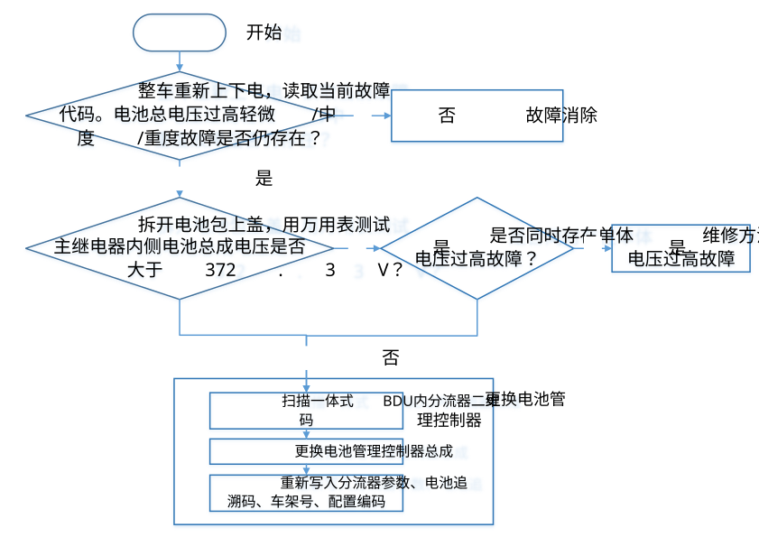
P1B23 电池总电压过高四级故障（维修检查方式参见P1B02）P1B1A 电池总电压过高五级故障（维修检查方式参见P1B02） P1B05 电池总电压过低三级故障

P1B24电池总电压过低四级故障（维修检查方式参见P1B05）P1B1B 电池总电压过低五级故障（维修检查方式参见P1B05） P1B0B 电池单体电压过低三级故障
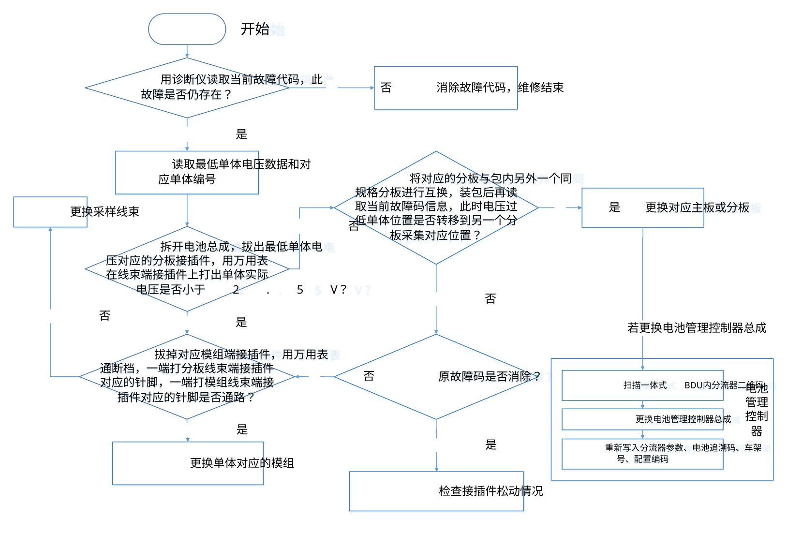
P1B26 电池单体电压过低四级故障（维修检查方式参见P1B0B）P1B2E 电池单体电压过低五级故障（维修检查方式参见P1B0B） P1B30 主正继电器高压机械端常闭故障

P1B34 预充电继电器高压机械端常闭故障（维修检查方式参见P1B30）P1B49 直流充电继电器机械端常闭故障（维修检查方式参见P1B30）P1B31 主正继电器高压机械端常开故障（维修检查方式参见P1B30）P1B48 直流充电继电器机械端常开故障（维修检查方式参见P1B30）P1B44 预充电失败故障
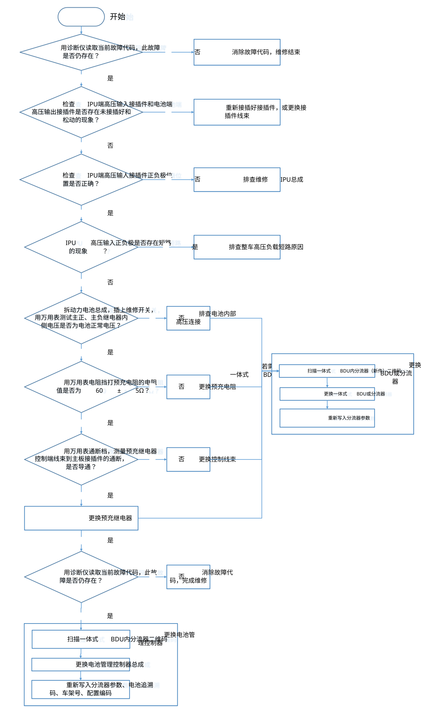
P1D00 总电压采集合理性故障
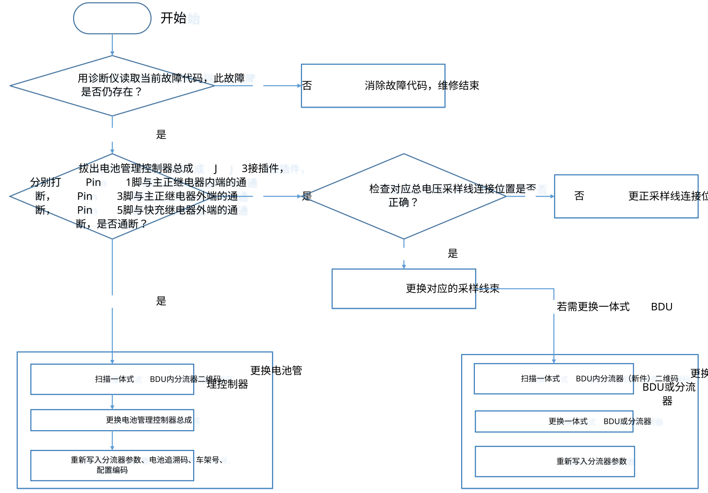
P1B21 充电电流过高三级故障
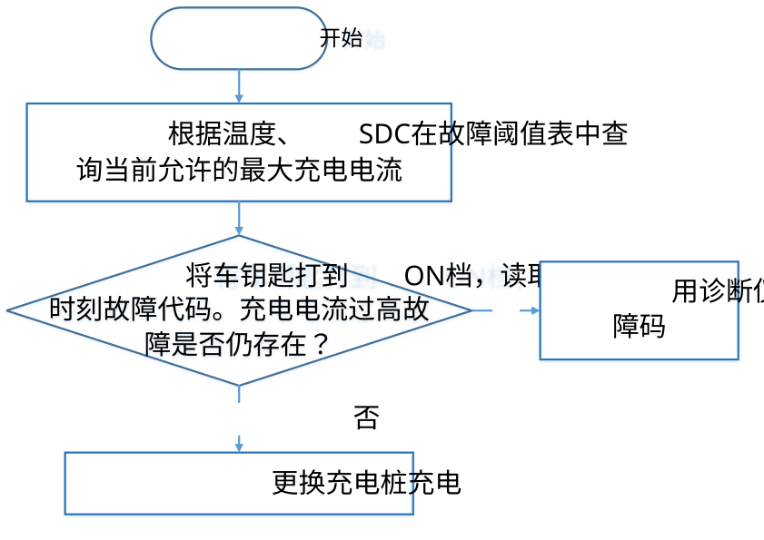
P1B27 充电电流过高四级故障（维修检查方式参见P1B21）P1B2B 充电电流过高五级故障（维修检查方式参见P1B21）P1B22 放电电流过高三级故障
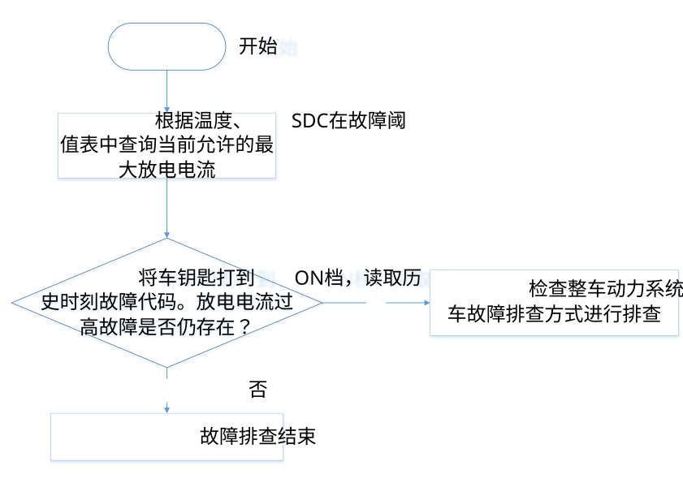
P1B28 放电电流过高四级故障（维修检查方式参见P1B22）P1B2C 放电电流过高五级故障（维修检查方式参见P1B22）P1B39 放电严重超功率（维修检查方式参见P1B22）
P1B57 电池热失控故障
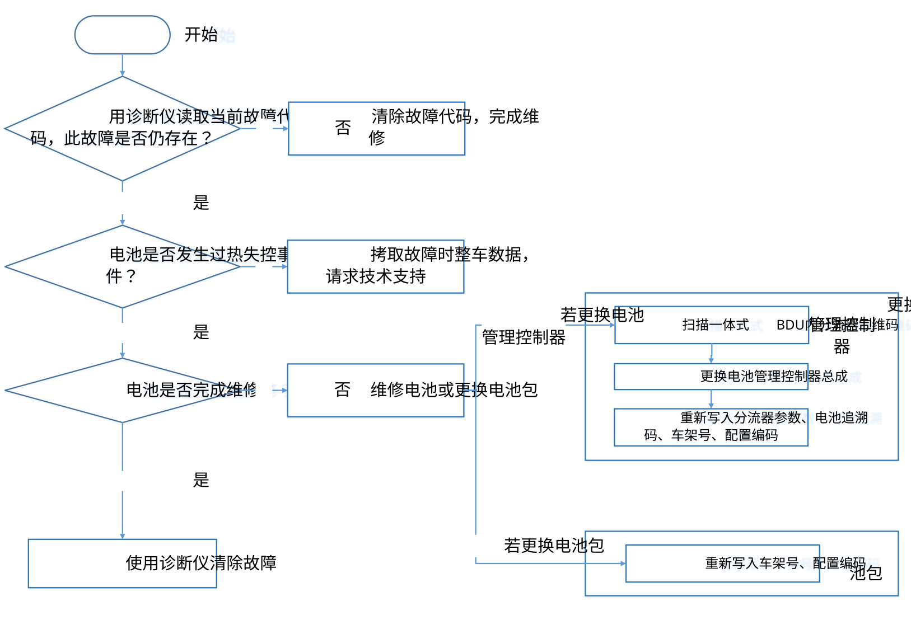
P1B58 历史故障不允许上高压

P1D09 12V蓄电池电压采集合理性故障

P1D44 架构标识校验故障

P1D0B~ P1D11、P1D13~ P1D1B 板温合理性故障
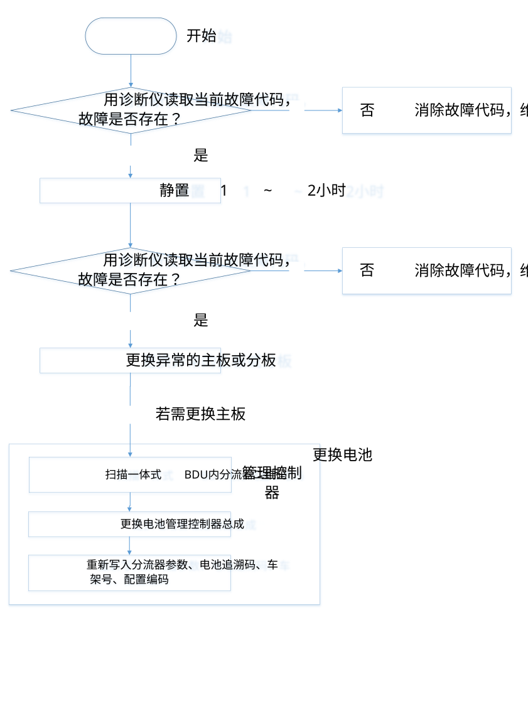
U1C96 菊花链单线断路故障
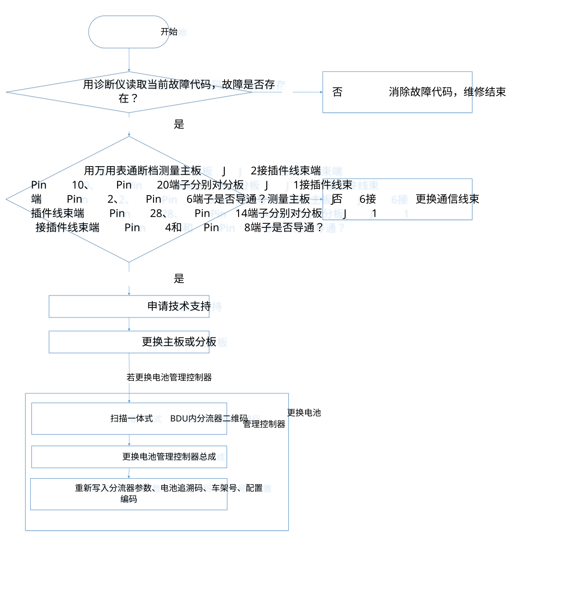
U1C82 BMS主板未接收到分板的CAN交互信息（维修检查方式参见U1C96）P1D20 芯片复位故障（维修检查方式参见U1C96）